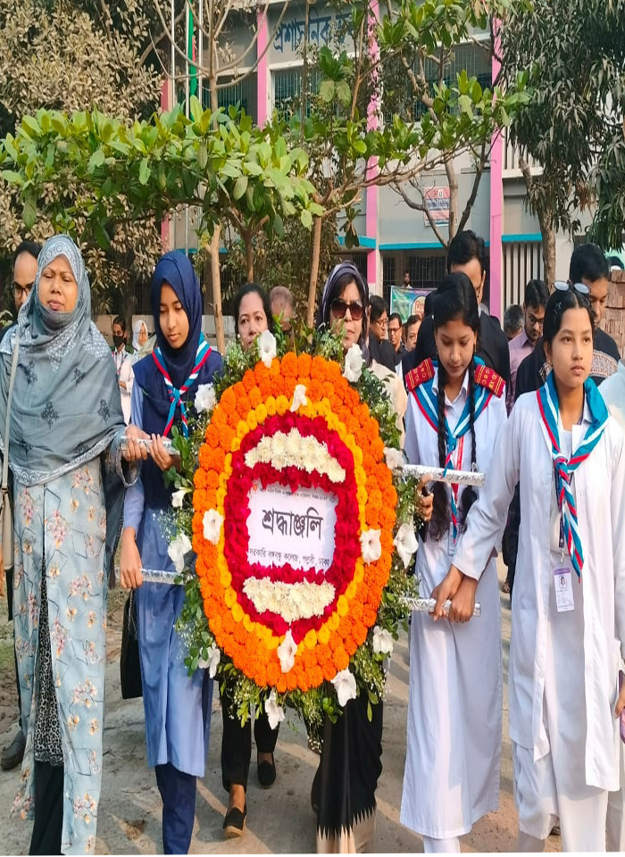

History
Pallabi Government College was established to meet the growing demand for higher education in Mirpur and Pallabi areas of Dhaka. Over the years, it has grown into one of the significant government colleges in the capital.
Academic Programs
The college provides education across several streams at HSC, Degree, and Honours levels.
| Level | Streams / Departments |
|---|---|
| Higher Secondary (HSC) | Science, Arts, Commerce |
| Degree (Pass) | B.A., B.Sc., B.Com. |
| Honours | Bangla, English, Economics, Political Science, Social Work |
Community Engagement
Students of Pallabi Government College contribute actively to community development through cultural programs, volunteer work, and social awareness campaigns.
Image
